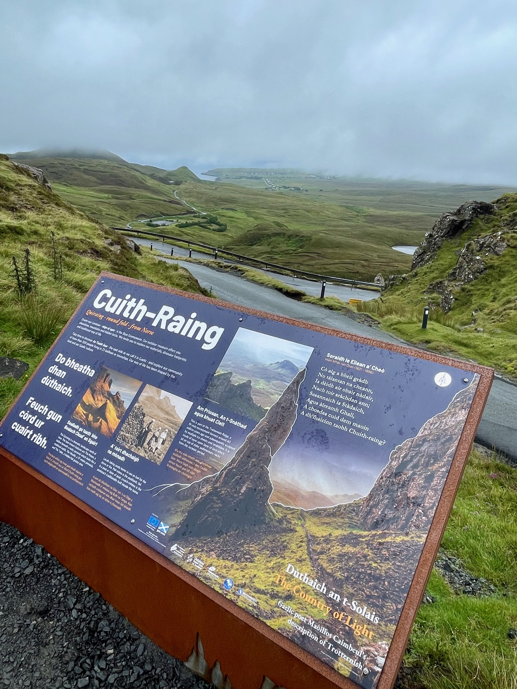
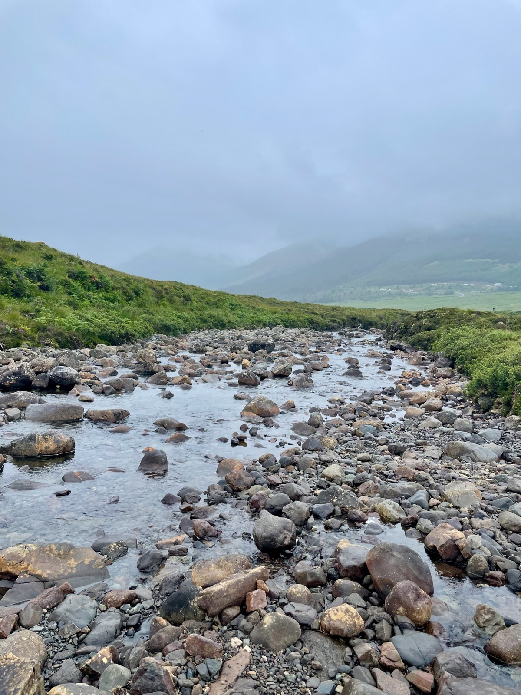
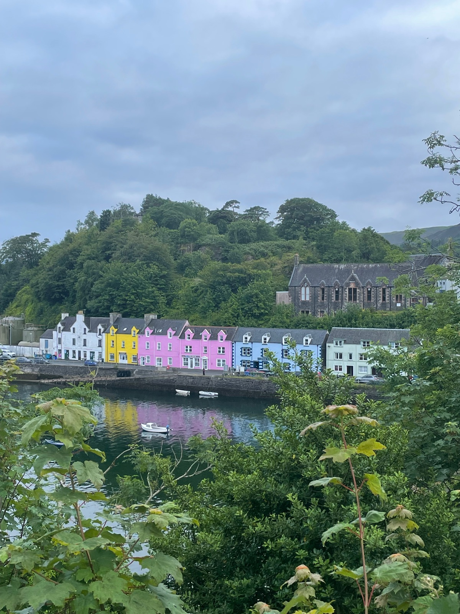
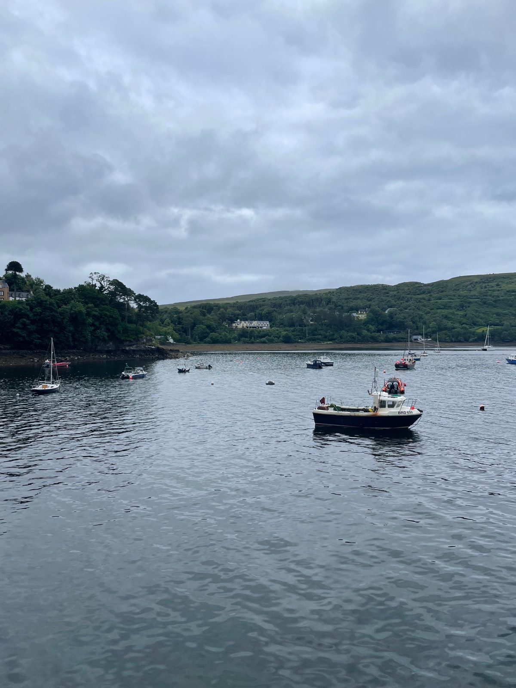
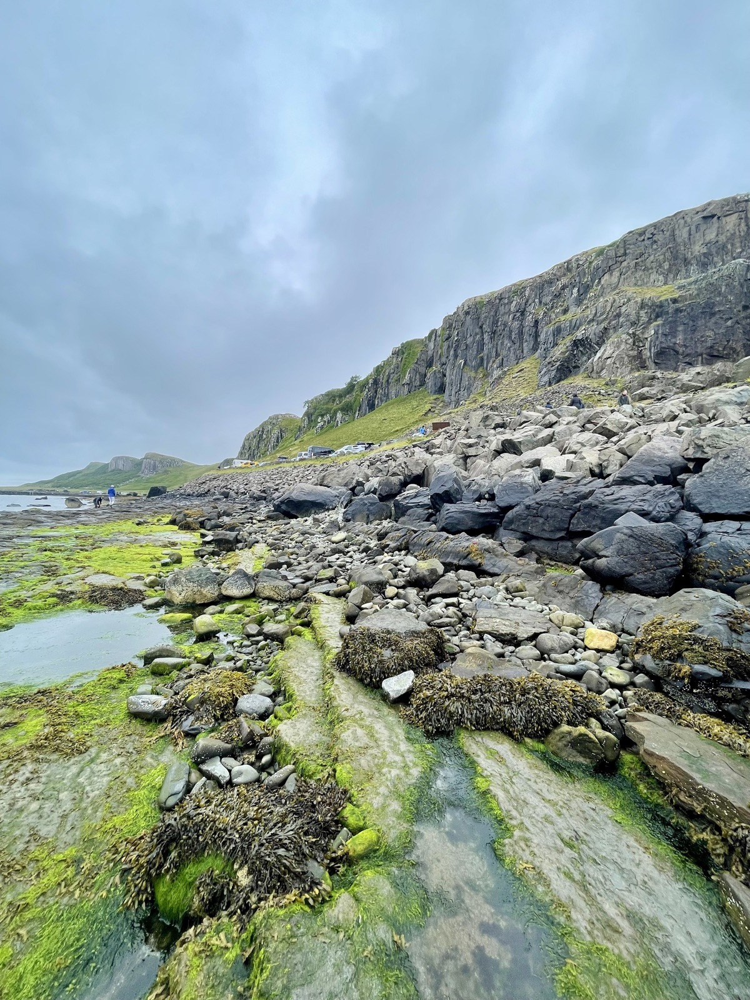

Unique retreat with peaked wooden cabins (called "hides") on a scenic hillside, whisky bar, and fine dining restaurant. Walking distance (~1 mile) to Portree town.
Unique cabin-style Restaurant on-site Whisky Hide bar Free parking Bay views
GF Notes
"Disappointing GF breakfast options — only salmon and eggs available (no GF bread despite several other restaurants in town having it)."
Family-run for over 25 years with stunning views from every room. Home to The View Restaurant — one of the best GF dining experiences on Skye. Elegant setting overlooking Portree Bay and the Cuillins.
The View Restaurant Bay & mountain views Family-run Free parking
GF Notes
"The View Restaurant can adapt almost anything on the menu to be GF. Super friendly staff who truly understand celiac needs. One of the best GF dining experiences on Skye."
Charming Georgian house from 1810 with mountain views, set in mature gardens. Chargrill restaurant specializes in steak and seafood. 10-minute walk from Portree Harbour.
Chargrill restaurant Mountain & loch views Mature gardens 14 boutique rooms Walk to harbour
GF Notes
"GF bread starters available. Staff understanding of dietary needs. Kitchen may remove items rather than substitute — ask specifically for GF alternatives. INCREDIBLE."
GF bread starters available. Staff understanding of dietary needs. Kitchen may remove items rather than substitute — ask specifically for GF alternatives.
What to Order
Steak and seafood specialties. GF bread starter is excellent. INCREDIBLE overall experience.
GF marked on menu. Scottish bistro in The Bosville Hotel featuring island seafood, Skye vegetables, and Scottish cheeses. GF dessert and bread/buns available.
What to Order
Fresh seafood dishes, seasonal Scottish ingredients. Ask about GF bread and dessert options.
Dedicated GF fryer. Almost everything can be adapted to GF. GF bread for burgers and toasties, GF cakes. Staff understand cross-contamination — feels very safe for celiacs.
What to Order
GF fish and chips (completely GF), GF burgers, GF toasties, GF cakes.
Has GF menu — ask server who will check with the chef on what's available. Cross-contamination caution: hash browns not in separate fryer. Call ahead for celiac-specific safety info.
What to Order
GF breakfast options. Check daily availability with staff.
Fresh seafood shed near Talisker Distillery. Oysters, mussels, and fresh fish are naturally GF. Open year-round Mon–Sat 11–5. No specific GF protocols mentioned — verify with staff.
Main public transport on Skye. Routes 52 (Portree–Armadale), 56 (Portree–Dunvegan), 57a/57c (Portree–Staffin–Uig). Infrequent service — plan carefully and check timetables.
Somerled Square is the main bus hub
CalMac Ferry
Ferry service from Armadale (south Skye) to Mallaig on the mainland. Book ahead in summer as it sells out. About 30-minute crossing.
Also accessible via Skye Bridge (free, no toll)
Car Rental
Highly recommended for exploring Skye. Public transport is limited and many attractions (Fairy Pools, Quiraing, Oyster Shed) are remote. Single-track roads are common — use passing places.
Rent from Inverness or Fort William before arriving
Walking
Portree town is very walkable. Hotels may be a 10–20 minute walk from the harbour. Bring good walking shoes for trails.
Most restaurants and shops within 5–10 minutes on foot
Landmarks & Must-See Spots
10 spots
Quiraing Walk
Nature / Hike
Dramatic ridge walk with otherworldly rock formations, sweeping views of the Trotternish peninsula. One of Scotland's most iconic hikes — moderately challenging, allow 2–3 hours for the loop.
Trotternish, north Skye
Went here

Fairy Pools
Nature / Walk
Crystal-clear blue pools and waterfalls at the foot of the Black Cuillins. Easy-to-moderate walk along the river — magical on a clear day. Can get very busy in summer; arrive early.
Glen Brittle, near Carbost
Went here

Colour House Viewpoint
Viewpoint
Iconic viewpoint overlooking Portree's famous coloured houses along the harbour. One of the most photographed scenes on Skye — beautiful at any time of day.
Portree Harbour

Apothecary's Tower
Historic
Historic tower in Portree town, a distinctive landmark of the village's heritage.
Portree town

An Corran Beach
Nature / Beach
Dramatic rocky beach near Staffin with striking cliff faces and rock formations. Known for dinosaur footprints embedded in the shoreline — one of the most significant dinosaur fossil sites in Scotland.
Staffin, north Skye

Scorrybreac Trail
Nature / Walk
Scenic coastal trail from Portree with views over the Sound of Raasay. Easy walk, great for a morning or evening stroll.
North of Portree
Bride's Veil Falls
Nature / Waterfall
Beautiful waterfall visible from the road between Portree and Staffin. A quick stop on the way to the Quiraing or Old Man of Storr.
Between Portree and Staffin, on A855
Sligachan Old Bridge
Historic / Nature
Picturesque old stone bridge with stunning views of the Cuillin mountains reflected in the river. Popular photo spot — the perfect introduction to Skye's dramatic landscape.
Sligachan, central Skye
Traveler recommended
Sligachan Waterfalls
Nature / Waterfall
Waterfalls near the old bridge at Sligachan, easily accessible from the road. Combine with a visit to the bridge for a scenic stop.
Sligachan, central Skye
Traveler recommended
Highland Cow Viewpoint
Nature / Wildlife
Roadside spot where Highland cows (hairy coos) are often grazing. A quintessentially Scottish photo opportunity.
Near Sligachan, central Skye
Traveler recommended
Things to Do
Tours & Activities
Stardust Boat Trips
Ticketed
Wildlife boat trips from Portree Harbour — see sea eagles, dolphins, puffins, seals, and sometimes whales and orcas. Portree's original wildlife boat trip, operating since 1998.
2-hour trips from £35/adult Departures 10:00, 12:00, 14:00, 16:00
Bike rental and coffee shop in Portree. Explore Skye's roads and trails by bike — a great way to cover more ground if you don't have a car.
Portree
What to Pack
July
Celiac travel card (English)Show to restaurant staff to explain your needs clearly
Essential
Portable GF snacksLimited options between towns on Skye — always carry backup food
Essential
Reusable water bottleStay hydrated on hikes; tap water is safe and excellent in Scotland
Essential
UK power adapter (Type G)Three-pin rectangular prongs
Scotland
Celiac dining card (Scottish Gaelic)Useful for rural areas, though English is universally spoken
Scotland
Midges repellentScottish midges are brutal May–September, especially near water and at dawn/dusk
Scotland
Waterproof jacketRain is frequent and unpredictable on Skye, even in summer
Portree
Sturdy hiking bootsEssential for Quiraing, Fairy Pools, and other trail walks
Portree
Layers for summerJuly temps average 12–17°C (54–63°F) with wind chill on exposed ridges
Portree
Compact umbrellaFor town days when a full waterproof feels like overkill
Portree
BinocularsFor wildlife watching — sea eagles, puffins, seals from shore or boat
Portree
Sun protectionLong summer days (sunrise ~4:30am, sunset ~10pm in July) with UV exposure on hikes
Portree
Travel Tips
Book restaurants well in advance during summer (June–August) — Portree is small and popular, and tables fill up fast
Take the bus to Flodigarry Road End for the Quiraing walk — bus works but a car would be more convenient. The bus schedules are sporadic.
Arrive early at Fairy Pools (before 10am) to avoid crowds — parking fills up quickly in summer
Single-track roads are common on Skye — pull into passing places to let oncoming traffic through (and to let faster cars behind you pass)
The weather changes rapidly on Skye — pack layers and waterproofs even on sunny days
CalMac ferry from Armadale to Mallaig sells out in summer — book ahead if that's your route off the island
What I'd Do Differently
I would NOT stay at Bracken Hide Hotel again — the price didn't match the experience. Marmalade Hotel looked INCREDIBLE and I'd book there or Cuillin Hills instead.
I'd rent a car rather than rely on buses — while the Quiraing bus worked, many of Skye's best spots are only accessible by car
I'd book all restaurant reservations before arriving!
Have a tip or comment?
Found a great GF spot in Portree? I'd love to hear from you.